Unit 2 · Session 1 · Tue, Oct 27, 2026
4 parts · every fact cited to its slide or textbook page. About 195 minutes of focused study.
IO = syllabus unit objective · SO = this session's objectives slide.
| ID | Objective | Covered in |
|---|---|---|
| IO2.1 | Identify major pharmacologic classes used in the management of musculoskeletal conditions and describe their mechanisms of action. | Part 1 · Musculoskeletal Pain & the Inflammatory Cascade Part 2 · Acetaminophen Part 3 · NSAIDs & COX-2 Selective Inhibition Part 4 · Osteoarthritis, Rheumatoid Arthritis & DMARDs |
| IO2.2 | Describe the indications, contraindications, adverse effects, and clinically significant interactions associated with medications used to treat musculoskeletal conditions. | Part 2 · Acetaminophen Part 3 · NSAIDs & COX-2 Selective Inhibition Part 4 · Osteoarthritis, Rheumatoid Arthritis & DMARDs |
| IO2.3 | Compare pharmacologic agents within and across therapeutic classes to distinguish clinically relevant differences in efficacy, safety, and use. | Part 3 · NSAIDs & COX-2 Selective Inhibition Part 4 · Osteoarthritis, Rheumatoid Arthritis & DMARDs |
| IO2.4 | Select appropriate pharmacologic therapy for common musculoskeletal conditions based on clinical presentation and patient-specific factors. | Part 3 · NSAIDs & COX-2 Selective Inhibition Part 4 · Osteoarthritis, Rheumatoid Arthritis & DMARDs |
| IO2.5 | Identify appropriate dosing, administration, and monitoring considerations for medications used in musculoskeletal conditions. | Part 4 · Osteoarthritis, Rheumatoid Arthritis & DMARDs |
| IO2.6 | Explain important medication-use and safety information to patients receiving pharmacotherapy for musculoskeletal. | Part 2 · Acetaminophen Part 4 · Osteoarthritis, Rheumatoid Arthritis & DMARDs |
| SO1 | Explain the pharmacologic basis of musculoskeletal pain and inflammation. | Part 1 · Musculoskeletal Pain & the Inflammatory Cascade |
| SO2 | Compare acetaminophen and NSAIDs, including COX-1 vs. COX-2 inhibition. | Part 2 · Acetaminophen Part 3 · NSAIDs & COX-2 Selective Inhibition |
| SO3 | Identify major NSAID adverse effects and select therapy based on patient risk factors. | Part 3 · NSAIDs & COX-2 Selective Inhibition Part 4 · Osteoarthritis, Rheumatoid Arthritis & DMARDs |
| SO4 | Explain the mechanisms of conventional vs. biologic DMARDs, including representative generic agents in each class. | Part 4 · Osteoarthritis, Rheumatoid Arthritis & DMARDs |
| SO5 | Identify key contraindications, adverse effects, and drug interactions for analgesics and DMARDs. | Part 2 · Acetaminophen Part 3 · NSAIDs & COX-2 Selective Inhibition Part 4 · Osteoarthritis, Rheumatoid Arthritis & DMARDs |
| SO6 | Preview: gout, skeletal muscle relaxants, and bone pharmacology continue in Session 2 (Thursday, October 29). ⚠ Preview only — taught in Session 2 (L04) | — |
+2 from the textbook
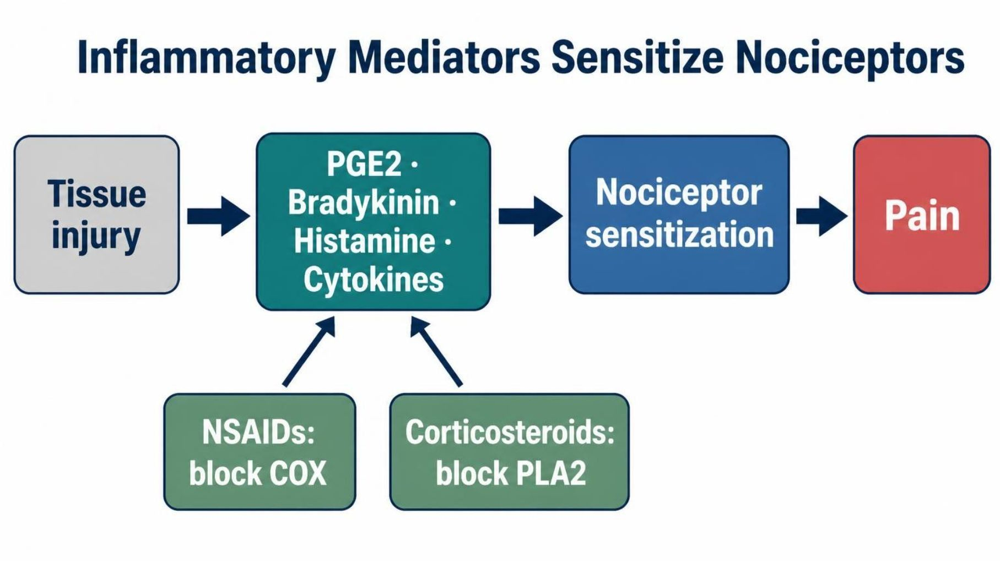
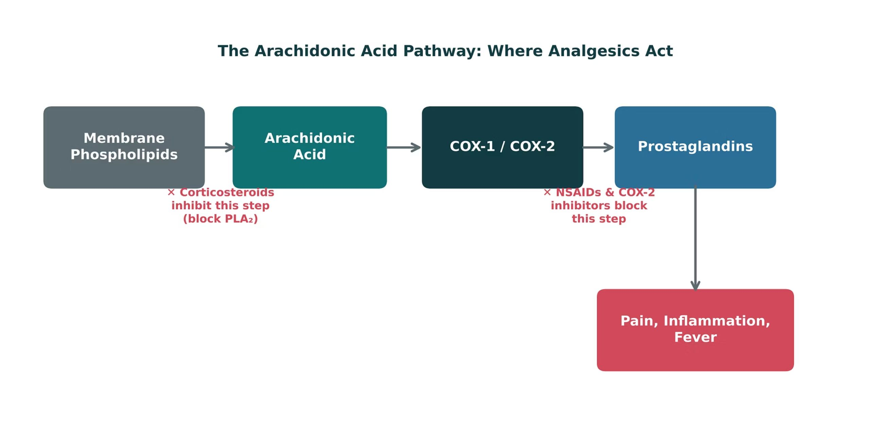
| Drug class | Step it blocks | What falls |
|---|---|---|
| Corticosteroids | Phospholipase A₂ (upstream) | A broad range of mediators |
| NSAIDs, COX-2 inhibitors | COX enzyme | Prostaglandins specifically |
| Biologic DMARDs (cytokine inhibitors) | Specific cytokines or immune cells | TNF-α, IL-6 signaling; B or T cells |
How to tell them apart. Sources: S8; S9; S6 (notes); SG U2-R2
+1 from the textbook
+1 from the textbook
+1 from the textbook
+1 from the textbook
+1 from the textbook
+1 from the textbook
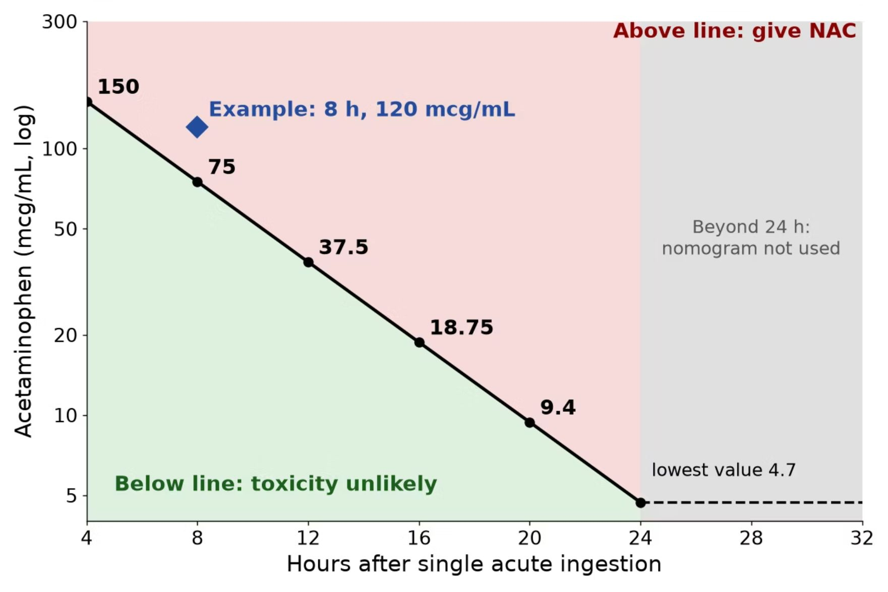
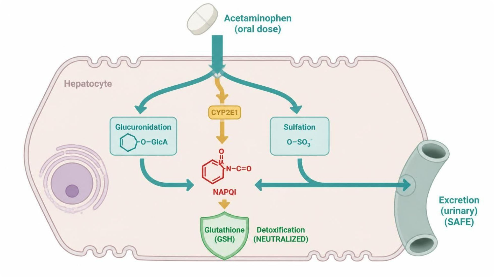
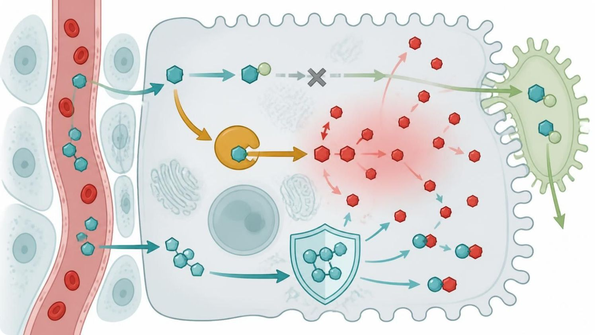
| Acetaminophen | NSAIDs | |
|---|---|---|
| Pain | Yes (mild–moderate) | Yes |
| Fever | Yes (hypothalamus) | Yes |
| Inflammation | Minimal — not reliable | Yes — powerful |
| Main danger | Liver (NAPQI) in overdose or double-dosing | GI, renal, cardiovascular |
| Antidote | N-acetylcysteine | Not covered in materials |
How to tell them apart. Sources: S15; S19; S23; S34
| Therapeutic dose | Overdose | |
|---|---|---|
| Glucuronidation + sulfation | ~90% → safe urinary excretion | Saturated |
| CYP2E1 → NAPQI | ~5–10% | More drug shunted here |
| Glutathione (GSH) | Neutralizes NAPQI | Exhausted → NAPQI binds hepatocytes |
| Result | Safe excretion | Centrilobular liver necrosis — give NAC early |
How to tell them apart. Sources: S16; S17; SG U2-R3
| Drug | Class | Formulation | Adult dose | Indications |
|---|---|---|---|---|
| Acetaminophen (Tylenol) | Analgesic / antipyretic | Tablets 325/500 mg; ER 650 mg; liquid; suppository; IV 1,000 mg | 650-1,000 mg PO every 6 hours (maximum 3-4 g/day; 2-3 g/day with chronic alcohol use or liver disease) | Mild to moderate pain, fever, osteoarthritis pain |
How to tell them apart. Sources: S63
| Drug | Adverse effects | Contraindications | Toxicity / overdose |
|---|---|---|---|
| Acetaminophen (Tylenol) | Rare at therapeutic doses; rash; hepatotoxicity with excess | Severe hepatic impairment; caution with chronic alcohol use | Hepatotoxicity from NAPQI after overdose; treat with N-acetylcysteine, ideally within 8 hours; use the Rumack-Matthew nomogram |
How to tell them apart. Sources: S63
+2 from the textbook
+2 from the textbook
+1 from the textbook
+1 from the textbook
+2 from the textbook
+1 from the textbook
+1 from the textbook
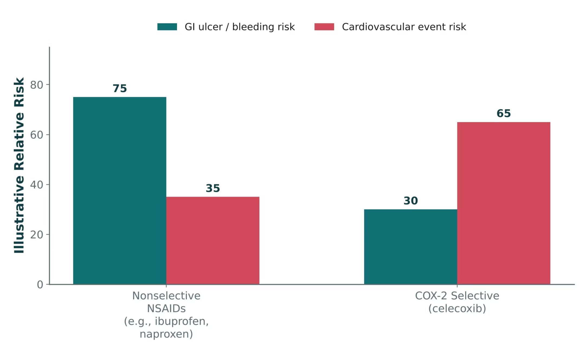
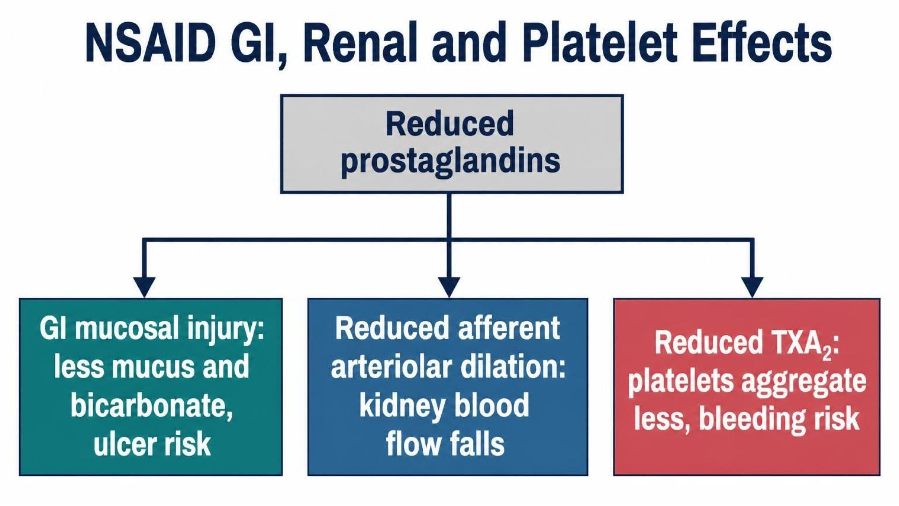
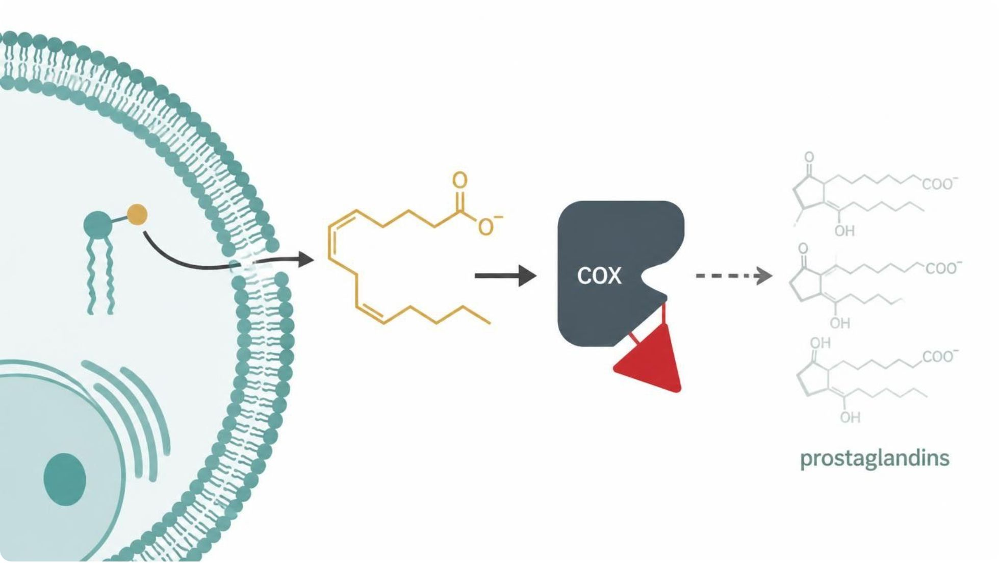
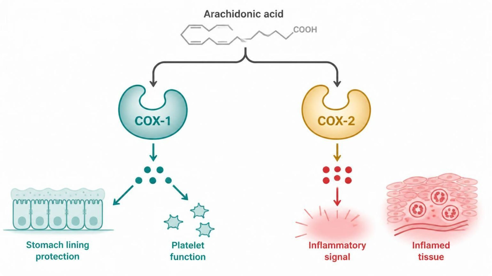
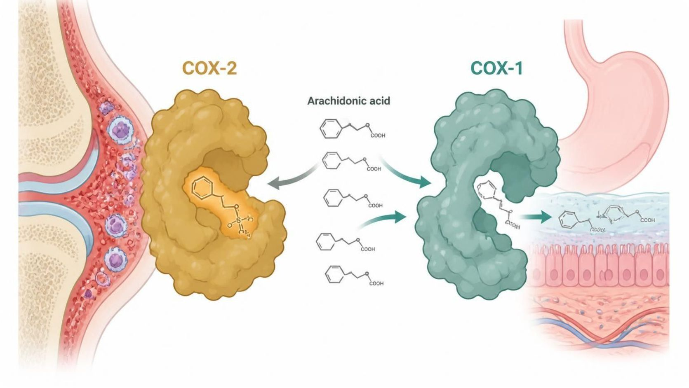
| COX-1 | COX-2 | |
|---|---|---|
| Expression | Constitutive (“housekeeping”) | Inducible in inflamed tissue |
| Protects / makes | Gastric mucosa; platelet TXA₂ (clotting); renal blood flow | Primary source of inflammatory prostaglandins |
| Blocking it causes | GI and renal adverse effects; less clotting | Less pain, swelling, fever (selective blockade = less GI toxicity) |
| Who blocks it | Nonselective NSAIDs | Nonselective NSAIDs and celecoxib |
How to tell them apart. Sources: S26; S27; SG U2-R4
| Nonselective (ibuprofen, naproxen…) | Celecoxib (COX-2 selective) | |
|---|---|---|
| GI ulcer / bleeding | Higher (Figure 2: 75) | Lower (Figure 2: 30) |
| Cardiovascular events | Lower (Figure 2: 35) | Higher (Figure 2: 65) |
| Renal risk | Present | Similar — selectivity does not protect the kidney |
How to tell them apart. Sources: S29; S31; SG U2-R5
| Drug | Class | Formulation | Adult dose | Indications |
|---|---|---|---|---|
| Ibuprofen (Advil, Motrin) | Nonselective NSAID | Tablets 200/400/600/800 mg; suspension; IV | 200-800 mg PO every 6-8 hours with food (maximum 3,200 mg/day Rx; 1,200 mg OTC) | Pain, inflammation, fever, osteoarthritis, rheumatoid arthritis, dysmenorrhea |
| Naproxen (Naprosyn, Aleve) | Nonselective NSAID | Tablets 220/250/375/500 mg; DR and ER forms; suspension | 250-500 mg PO twice daily with food (maximum 1,250 mg/day) | Osteoarthritis, rheumatoid arthritis, gout flare, tendinitis, dysmenorrhea |
| Diclofenac (Voltaren, Cataflam) | Nonselective NSAID (COX-2 preferring) | Tablets 50 mg; DR 75 mg; ER 100 mg; 1% gel; ophthalmic; patch | 50 mg PO two to three times daily or 75 mg twice daily (maximum 150 mg/day); gel 2-4 g to joint up to four times daily | Osteoarthritis, rheumatoid arthritis, acute pain, topical for knee and hand osteoarthritis |
| Ketorolac (Toradol) | Nonselective NSAID (short-term, potent) | Tablets 10 mg; injection 15/30 mg; nasal spray | 15-30 mg IV/IM every 6 hours (maximum 120 mg/day) or 10 mg PO every 4-6 hours; total course 5 days or less | Short-term management of moderately severe acute pain |
| Celecoxib (Celebrex) | Selective COX-2 inhibitor | Capsules 50/100/200/400 mg | 200 mg PO once daily or 100 mg twice daily (rheumatoid arthritis 100-200 mg twice daily) | Osteoarthritis, rheumatoid arthritis, acute pain, ankylosing spondylitis |
How to tell them apart. Sources: S64; S65; S66; S67; S68
| Drug | Adverse effects | Contraindications | Toxicity / overdose |
|---|---|---|---|
| Ibuprofen (Advil, Motrin) | GI upset, ulcer and bleeding, renal injury, hypertension, fluid retention, platelet inhibition | Active GI bleed, NSAID-triggered asthma, CABG setting, advanced renal disease, third trimester pregnancy, heart failure (caution) | GI bleeding, acute kidney injury, metabolic acidosis, seizures in large overdose; supportive care |
| Naproxen (Naprosyn, Aleve) | GI upset and bleeding, renal injury, hypertension, fluid retention, cardiovascular risk | Active GI bleed, NSAID-triggered asthma, CABG setting, severe renal impairment, third trimester | GI bleeding, renal injury, lethargy and seizures in overdose; activated charcoal and supportive care |
| Diclofenac (Voltaren, Cataflam) | GI upset and bleeding, elevated liver enzymes, hypertension, renal injury, cardiovascular risk | Active GI bleed, CABG setting, severe renal or hepatic impairment, NSAID-triggered asthma | Hepatotoxicity, GI bleeding, renal injury; topical form has much lower systemic exposure |
| Ketorolac (Toradol) | GI bleeding, renal injury, bleeding, hypertension | Active GI bleed, renal impairment, high bleeding risk, perioperative CABG, labor and delivery, pregnancy, age 65+ (reduce dose) | Boxed warnings for GI bleeding, renal failure, bleeding and cardiovascular events; limit to 5 days |
| Celecoxib (Celebrex) | Dyspepsia, hypertension, edema, renal injury, cardiovascular thrombotic risk | Sulfonamide allergy, CABG setting, active GI bleed, advanced renal disease, aspirin-triggered asthma (caution) | Boxed warning for cardiovascular and GI risk; renal injury in overdose; supportive care |
How to tell them apart. Sources: S64; S65; S66; S67; S68
| Drug | Half-life (h) | What sets it apart |
|---|---|---|
| Aspirin | 0.25 | Now mainly antiplatelet (81–325 mg daily); avoid in hemophilia |
| Nonacetylated salicylates | Not covered in materials | Anti-inflammatory without platelet inhibition: an option in asthma, bleeding tendency, renal dysfunction |
| Ibuprofen | 2 | ≤ 1600 mg/day analgesic only; 2400 mg/day anti-inflammatory |
| Naproxen | 12–17 | More GI bleeding than OTC ibuprofen, better CV profile; avoid in hepatic impairment |
| Diclofenac | 1.9–2.3 | More aminotransferase rises; 1% topical gel OTC |
| Indomethacin | 4–5 | Headache in 11.7%; can worsen depression, epilepsy, parkinsonism |
| Ketorolac | 5–6 | Analgesic use; start IV/IM/intranasal; ≤ 120 mg/day; ≤ 5 days |
| Celecoxib | 11.2 | 10–20× COX-2 selective; 100–200 mg bid; no platelet effect at usual doses |
| Meloxicam | 20 | Relatively COX-2 selective at 7.5 mg/day; fewer GI effects |
| Etodolac | 6.4 | Relatively COX-2 selective; linked to acute pancreatitis |
| Nabumetone | 22.5–29.8 | Only nonacid NSAID (prodrug); less ulceration |
| Piroxicam | 50 | Above 20 mg/day sharply raises ulcer and bleeding risk |
| Sulindac | 16.4 | Less effect on renal prostaglandins; more liver test abnormalities |
| Oxaprozin · diflunisal · flurbiprofen · tolmetin | 54.9 · 8–12 · 3.8 · 1–2 | Oxaprozin once daily; diflunisal rarely used; flurbiprofen rare tremor/rigidity; tolmetin ineffective in gout |
How to tell them apart. Sources: p. 677; p. 679; p. 680; p. 681; p. 694
+2 from the textbook
+6 from the textbook
+4 from the textbook
+1 from the textbook
+3 from the textbook
+3 from the textbook
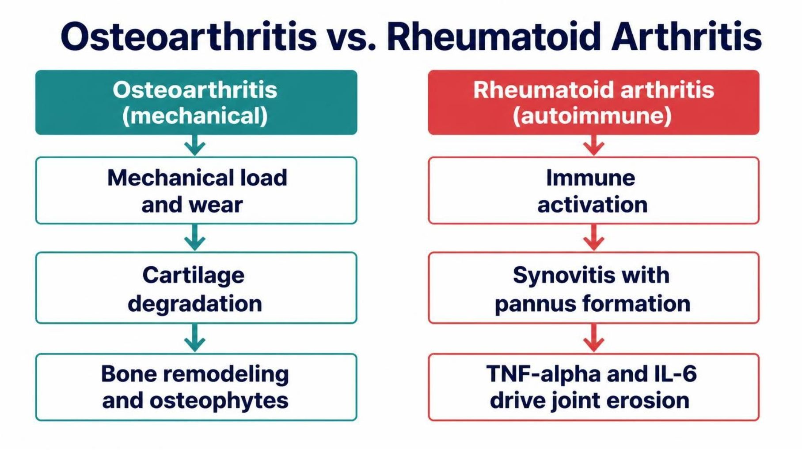
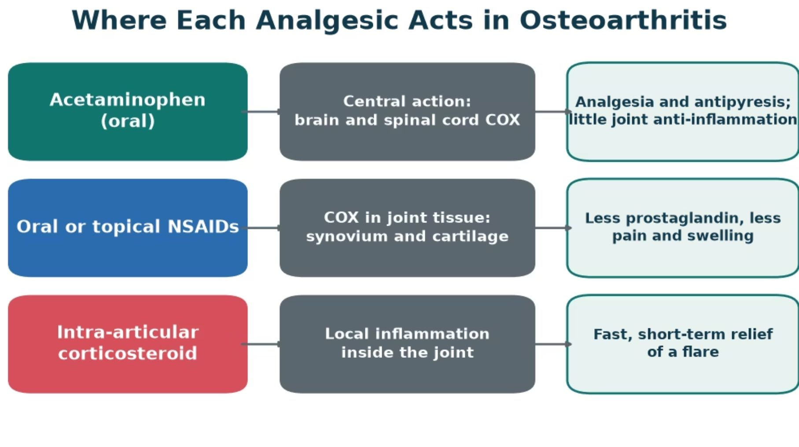
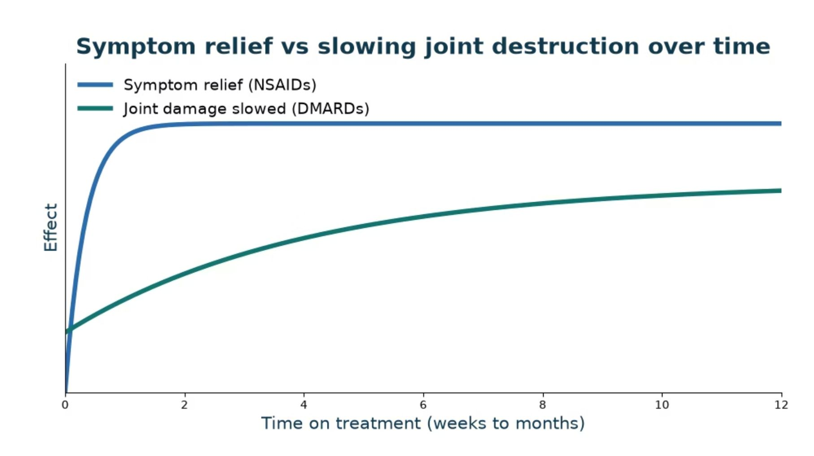
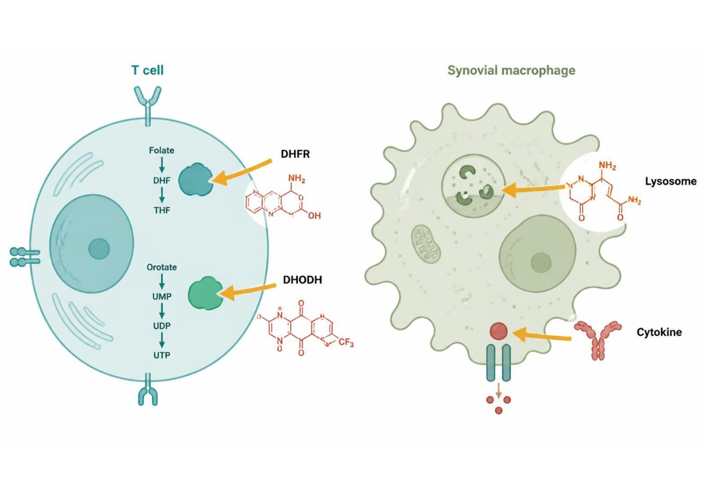
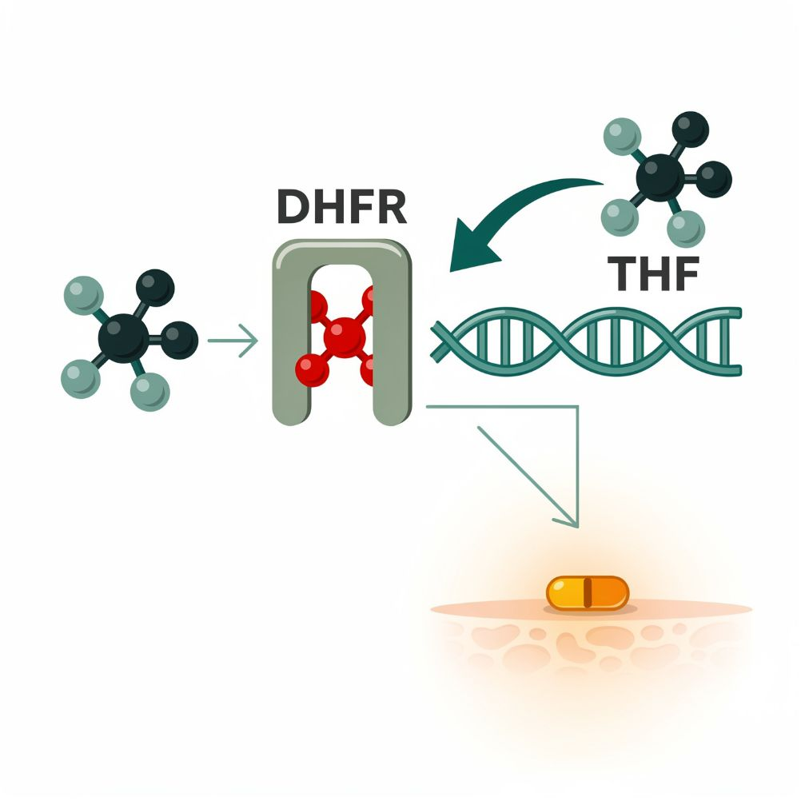
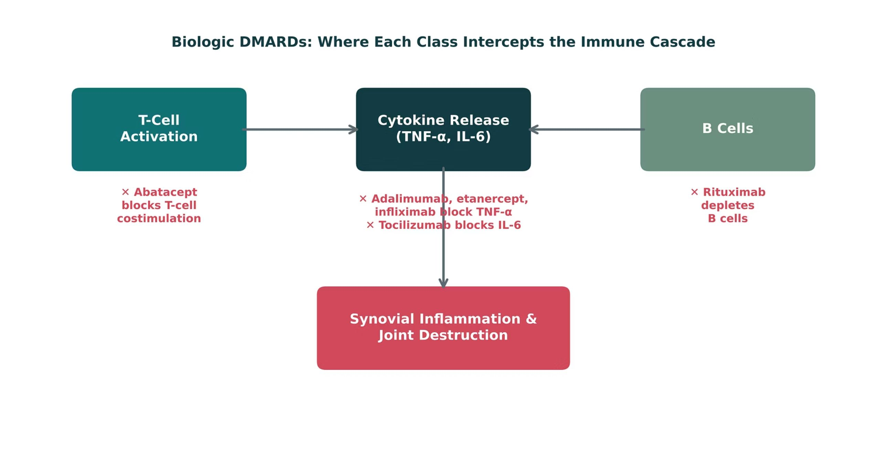
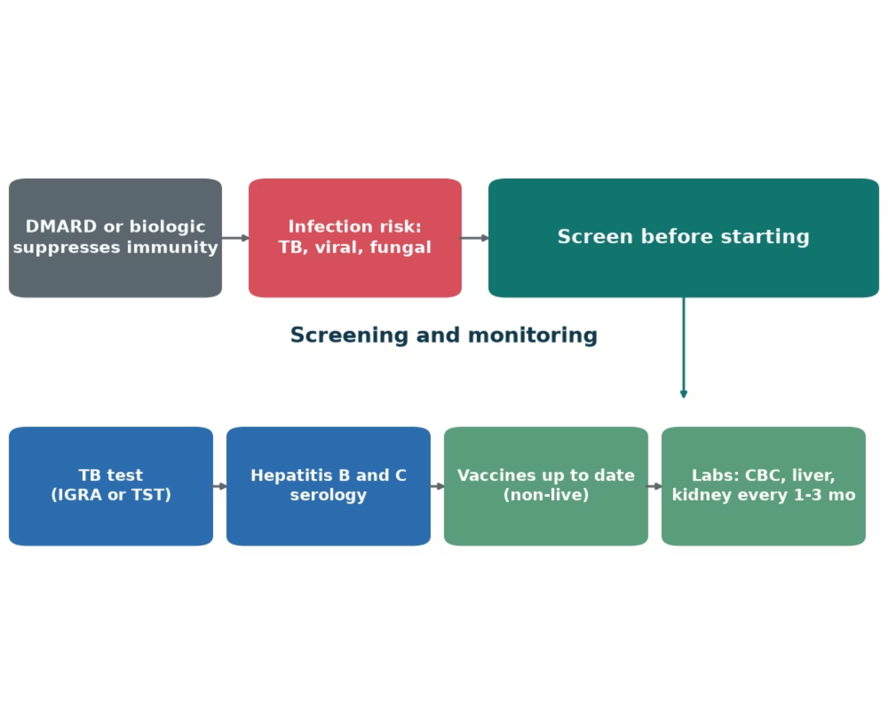
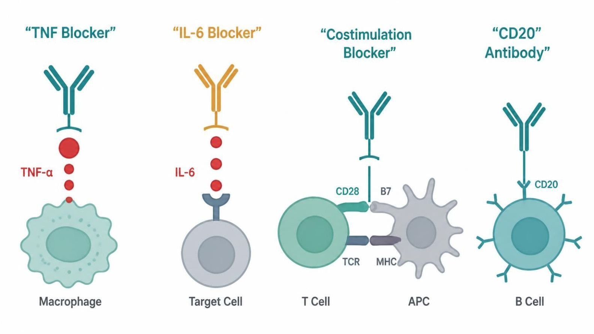
| Osteoarthritis | Rheumatoid arthritis | |
|---|---|---|
| Disease type | Degenerative | Autoimmune, systemic inflammatory |
| What damages the joint | Cartilage breakdown, mechanical wear | Immune-mediated joint destruction |
| Treatment goal | Pain control and function | Suppress disease activity, not just pain |
| Core drugs | Acetaminophen, NSAIDs (oral/topical), intra-articular steroids | DMARDs (methotrexate first) |
How to tell them apart. Sources: S41; S41 (notes); S43; S47
| Drug | Target / action | Effect |
|---|---|---|
| Methotrexate | Inhibits DHFR; disrupts folate metabolism | Slower immune-cell growth |
| Hydroxychloroquine | Alters lysosomal and TLR signaling | Less antigen signaling |
| Sulfasalazine | Reduces cytokine and prostaglandin production | Less inflammation |
| Leflunomide | Inhibits DHODH; limits pyrimidine synthesis | Slower T-cell growth |
How to tell them apart. Sources: S48
| Drug | Class | Formulation | Adult dose | Indications |
|---|---|---|---|---|
| Methotrexate (Trexall, Otrexup) | Conventional DMARD (antimetabolite, DHFR inhibitor) | Tablets 2.5 mg; subcutaneous autoinjector; injection | 7.5-25 mg ONCE WEEKLY PO or SC, with folic acid 1 mg daily | Rheumatoid arthritis (anchor DMARD), psoriatic arthritis, psoriasis |
| Hydroxychloroquine (Plaquenil) | Conventional DMARD (antimalarial) | Tablets 200 mg | 200-400 mg PO daily (maximum 5 mg/kg/day actual body weight) | Rheumatoid arthritis (mild), lupus, malaria |
| Sulfasalazine (Azulfidine) | Conventional DMARD | Tablets 500 mg; DR 500 mg | 500 mg PO daily, titrate to 1,000 mg twice daily | Rheumatoid arthritis, ulcerative colitis |
| Leflunomide (Arava) | Conventional DMARD (DHODH inhibitor) | Tablets 10/20 mg | 20 mg PO daily (loading 100 mg daily for 3 days optional) | Rheumatoid arthritis |
How to tell them apart. Sources: S69; S70; S71; S72
| Drug | Adverse effects | Contraindications | Toxicity / overdose |
|---|---|---|---|
| Methotrexate (Trexall, Otrexup) | Nausea, mucositis, hepatotoxicity, myelosuppression, pneumonitis, teratogenicity | Pregnancy, significant liver disease, severe renal impairment, active infection, heavy alcohol use | Daily dosing by mistake causes severe toxicity; leucovorin rescue; monitor CBC, liver tests and creatinine |
| Hydroxychloroquine (Plaquenil) | Nausea, rash, headache, retinopathy with long use, QT prolongation | Known retinal disease, hypersensitivity; caution with QT-prolonging drugs | Retinal toxicity with long-term use (baseline and annual eye exams); cardiotoxicity and arrhythmia in overdose |
| Sulfasalazine (Azulfidine) | Nausea, rash, headache, myelosuppression, hepatotoxicity, orange urine, reversible oligospermia | Sulfa or salicylate allergy, intestinal or urinary obstruction, porphyria; G6PD deficiency (caution) | Agranulocytosis and hemolysis; monitor CBC and liver tests |
| Leflunomide (Arava) | Diarrhea, hepatotoxicity, hypertension, alopecia, neuropathy, teratogenicity | Pregnancy, severe liver disease, concurrent hepatotoxic drugs | Boxed warning for hepatotoxicity and embryo-fetal toxicity; cholestyramine washout |
How to tell them apart. Sources: S69; S70; S71; S72
| Class · example | How it works | Pearl |
|---|---|---|
| TNF inhibitors · adalimumab, etanercept, infliximab | Bind soluble or membrane TNF-α, preventing TNFR activation (etanercept is a receptor fusion) | First-line biologic; watch latent TB reactivation |
| IL-6 inhibitor · tocilizumab | Blocks membrane and soluble IL-6 receptors | Works as monotherapy; can raise lipids and liver enzymes |
| B-cell therapy · rituximab (anti-CD20) | Binds CD20 and depletes B cells for months | After TNF-inhibitor failure; check hepatitis B first |
| T-cell costimulation · abatacept (CTLA-4-Ig) | Binds CD80/86; blocks CD28 costimulation | Acts earliest; generally lower infection signal |
How to tell them apart. Sources: S51; S52; S53; SG U2-R8
| Stem | Meaning | Example |
|---|---|---|
| -mab | Monoclonal antibody | Rituximab (anti-CD20) |
| -zumab | Humanized antibody | Tocilizumab (IL-6R) |
| -ximab | Chimeric antibody | Infliximab (TNF-α) |
| -umab | Fully human antibody | Adalimumab (TNF-α) |
| -cept | Receptor fusion protein | Etanercept, abatacept |
| -nib / -tinib | Kinase inhibitor | Tofacitinib (JAK) |
| -coxib | Selective COX-2 inhibitor | Celecoxib |
| -profen | Propionic-acid NSAID | Ibuprofen, naproxen |
| -fenac | Acetic-acid NSAID | Diclofenac |
| -oxicam | Oxicam NSAID | Meloxicam |
How to tell them apart. Sources: S60; S60 (notes)
| Drug | Class | Formulation | Adult dose | Indications |
|---|---|---|---|---|
| Adalimumab (Humira) | Biologic DMARD (TNF inhibitor) | Prefilled syringe or pen 40 mg/0.8 mL | 40 mg SC every other week (weekly for some patients) | Rheumatoid arthritis, psoriatic arthritis, ankylosing spondylitis, Crohn disease |
| Etanercept (Enbrel) | Biologic DMARD (soluble TNF receptor) | Prefilled syringe or pen 25/50 mg; vial | 50 mg SC once weekly (or 25 mg twice weekly) | Rheumatoid arthritis, psoriatic arthritis, ankylosing spondylitis, plaque psoriasis |
| Infliximab (Remicade) | Biologic DMARD (chimeric TNF antibody) | IV vial 100 mg; biosimilars | 3 mg/kg IV at weeks 0, 2 and 6, then every 8 weeks, with methotrexate | Rheumatoid arthritis, Crohn disease, ulcerative colitis, ankylosing spondylitis |
| Tocilizumab (Actemra) | Biologic DMARD (IL-6 receptor antagonist) | IV 20 mg/mL; SC prefilled syringe or pen 162 mg | IV 4-8 mg/kg every 4 weeks; SC 162 mg every other week to weekly | Rheumatoid arthritis, giant cell arteritis, systemic JIA |
| Abatacept (Orencia) | Biologic DMARD (T-cell costimulation modulator) | IV 250 mg vial; SC prefilled syringe 125 mg | IV by weight (500-1,000 mg) at weeks 0, 2, 4 then every 4 weeks; SC 125 mg weekly | Rheumatoid arthritis, psoriatic arthritis, polyarticular JIA |
| Rituximab (Rituxan) | Biologic DMARD (anti-CD20 antibody) | IV 100/500 mg vials | 1,000 mg IV on days 1 and 15, repeated no sooner than every 16-24 weeks, with methotrexate | Rheumatoid arthritis (after TNF inhibitor failure), lymphoma, vasculitis |
How to tell them apart. Sources: S73; S74; S75; S76; S77; S78
| Drug | Adverse effects | Contraindications | Toxicity / overdose |
|---|---|---|---|
| Adalimumab (Humira) | Injection-site reaction, infection, headache, rash, demyelination (rare), lymphoma (rare) | Active serious infection, untreated latent TB, demyelinating disease, NYHA III-IV heart failure | Boxed warning for serious infections and malignancy; screen for TB and hepatitis B before starting |
| Etanercept (Enbrel) | Injection-site reaction, infection, headache, demyelination (rare) | Active serious infection, sepsis, untreated latent TB | Boxed warning for serious infections and malignancy; screen for TB and hepatitis B |
| Infliximab (Remicade) | Infusion reaction, infection, headache, anti-drug antibodies, hepatotoxicity | Active serious infection, untreated latent TB, NYHA III-IV heart failure at high dose | Boxed warning for serious infections and malignancy; infusion reactions treated by slowing or stopping |
| Tocilizumab (Actemra) | Infection, elevated liver enzymes, neutropenia, hyperlipidemia, GI perforation (rare) | Active serious infection, untreated latent TB; caution with diverticulitis | Boxed warning for serious infections; monitor CBC, liver enzymes and lipids |
| Abatacept (Orencia) | Headache, infection, nasopharyngitis, infusion reaction | Active serious infection; caution in COPD | Infection risk; do not combine with TNF inhibitors; screen for TB and hepatitis B |
| Rituximab (Rituxan) | Infusion reaction, infection, hypogammaglobulinemia, hepatitis B reactivation | Active serious infection, severe heart failure; screen hepatitis B first | Boxed warnings for infusion reactions, hepatitis B reactivation and PML; premedicate with acetaminophen, antihistamine and steroid |
How to tell them apart. Sources: S73; S74; S75; S76; S77; S78
| Drug(s) | Why it matters |
|---|---|
| PPIs and misoprostol | GI protection with long-term NSAIDs |
| Warfarin and anticoagulants | NSAIDs raise bleeding risk |
| ACE inhibitors, ARBs and diuretics | NSAIDs add kidney injury (“triple whammy”) |
| Lithium | NSAIDs raise lithium levels |
| Systemic corticosteroids | Flare bridge; bone loss and GI risk with NSAIDs |
| Folic acid and leucovorin | Lower methotrexate toxicity |
| Isoniazid and rifampin | Latent TB treatment before biologics |
| Tramadol and opioids | Add-on analgesia for osteoarthritis |
| Live vaccines | Avoid on biologic or immunosuppressive therapy |
How to tell them apart. Sources: S79; S79 (notes)
| Drug | How it works | Main uses | Watch for |
|---|---|---|---|
| Methotrexate | DHFR (slides); AICAR transformylase (textbook) | RA anchor; psoriasis, PsA, JIA | Nausea, stomatitis, liver, marrow, lung; teratogenic |
| Hydroxychloroquine, chloroquine | Suppress T-cell responses and chemotaxis; dampen type 1 IFN | Mild RA; SLE (lowers mortality); Sjögren | Retinopathy (eye exams); cardiomyopathy; 3–6 months to respond |
| Sulfasalazine | Split into sulfapyridine + 5-aminosalicylic acid | RA (slows radiologic progression); ulcerative colitis | ~30% stop it; rash, toxic epidermal necrolysis, neutropenia; reversible male infertility |
| Leflunomide | Dihydroorotate dehydrogenase inhibitor | RA (equals methotrexate) | Diarrhea (25%), liver tests, hypertension; half-life 19 days (cholestyramine shortens) |
| Azathioprine | Becomes 6-thioguanine; suppresses B and T cells | RA, SLE, transplant | Marrow suppression (TPMT, NUDT15), GI upset, cancer, infection |
| Mycophenolate mofetil | IMPDH inhibitor | SLE (renal and nonrenal), scleroderma lung; not proven in RA | GI, liver, cytopenias, infection; contraindicated in pregnancy |
| Cyclosporine, tacrolimus, voclosporin | Calcineurin inhibitors (block T-cell cytokines) | Severe RA; lupus nephritis | Nephro-, neuro-, cardiotoxicity, hypertension; CYP3A4 interactions (grapefruit) |
| Cyclophosphamide | Cross-links DNA | Lupus nephritis, CNS lupus, vasculitis | Cytopenias, infection, sterility, bladder and skin cancer |
| Apremilast | PDE4 inhibitor (↑ cAMP) | Plaque psoriasis, PsA, Behçet oral ulcers | Diarrhea, nausea, weight loss, mood changes; CYP3A4 |
| Mesalamine | Topical colonic 5-aminosalicylate | Ulcerative colitis | Diarrhea, headache; renal impairment (monitor) |
How to tell them apart. Sources: S47; S49; p. 682; p. 683; p. 684; p. 687; p. 688; p. 689; p. 690
| Drug(s) | Target | Main uses | Watch for |
|---|---|---|---|
| Adalimumab, etanercept, infliximab, certolizumab, golimumab | TNF-α | RA, PsA, AS, psoriasis; infliximab and adalimumab also Crohn and UC | TB, fungal, hepatitis B; heart failure; demyelination; lymphoma (boxed) |
| Tocilizumab, sarilumab | IL-6 receptor | RA; tocilizumab also giant cell arteritis | Infection, liver enzymes, lipids, cytopenias; no sarilumab with diverticulitis |
| Rituximab | CD20 B cells (depletion) | RA with methotrexate; GPA | First-dose rash (~30%), infusion reactions, hepatitis B reactivation |
| Abatacept | CD80/86–CD28 costimulation | RA, PsA, JIA | Infection; don’t combine with TNF inhibitors; live vaccines |
| Anakinra, canakinumab, rilonacept | Interleukin-1 | CAPS; anakinra approved but rarely used in RA | Injection-site reactions (up to 40%), URIs |
| Baricitinib, tofacitinib, upadacitinib | Janus kinase (JAK-STAT), oral | RA after TNF or methotrexate failure; PsA; UC | Boxed VTE/MACE/cancer; herpes zoster; ↑ LDL; caution with diverticulitis |
| Secukinumab, ixekizumab | IL-17A | Psoriasis, PsA, AS | Infection; can cause or worsen IBD; TB screen |
| Ustekinumab | IL-12/IL-23 (p40) | PsA, psoriasis, Crohn, UC | URIs; stop ≥ 15 weeks before live vaccines |
| Guselkumab, risankizumab | IL-23 (p19) | Plaque psoriasis, PsA | URIs; TB screen |
| Belimumab | BLyS (B-cell survival) | SLE, lupus nephritis | Infection; depression and suicide reported |
| Anifrolumab | Type 1 interferon receptor | Nonrenal SLE | URIs, bronchitis, infusion reactions |
How to tell them apart. Sources: S51; p. 682; p. 683; p. 684; p. 685; p. 686; p. 689; p. 690; p. 692; p. 693
Every term, mechanism, drug, and number. Hide the answers and quiz yourself; tap a blurred answer to peek.
| Prompt | Answer |
|---|---|
| Pain by mechanism | Nociceptive · inflammatory · neuropathicS5 |
| Chronic pain | Persists beyond expected healing, often > 3 monthsS5 |
| 4 pain mediators | Prostaglandins, bradykinin, histamine, cytokines (TNF-α, IL-1, IL-6)S6; SG U2-R1 |
| Corticosteroid site | Phospholipase A₂ (upstream) → broad mediator suppressionS9; SG U2-R2 |
| NSAID site | COX → prostaglandins specificallyS9; S24 |
| Acetaminophen effects | Analgesic + antipyretic; minimal anti-inflammatoryS15 |
| Acetaminophen toxic metabolite | NAPQI (N-acetyl-p-benzoquinone imine)S19; S19 (notes) |
| Acetaminophen antidote | N-acetylcysteine — glutathione precursorS19; SG U2-R3 |
| Hidden acetaminophen | Combination cold, flu, and sleep products — ask about ALL sourcesS20 |
| COX-1 | Housekeeping: gastric protection, renal blood flowS26; SG U2-R4 |
| COX-2 | Induced at inflammation; main inflammatory prostaglandin sourceS26; SG U2-R4 |
| Ibuprofen | Common first-line for mild-moderate painS28 |
| Naproxen | Longer half-life, twice-dailyS28 |
| Diclofenac | Oral and topicalS28 |
| Indomethacin | More potent; more GI/CNS effectsS28 |
| Ketorolac | Short-term only; significant GI/renal riskS28 |
| Celecoxib trade-off | ↓ GI risk, ↑ CV risk, same renal riskS29; SG U2-R5 |
| NSAID adverse effects | GI (ulcer, bleed) · renal (AKI, fluid) · CV (HTN, events)S34 |
| NSAID cautions | GI bleed/ulcer, CKD, HF/CV disease, anticoagulant, late pregnancyS36 |
| Triple whammy | NSAID + ACEi/ARB + diuretic → AKIS36 (notes) |
| NSAID + corticosteroid | ↑ GI ulcer riskS36 |
| OA vs. RA | Degenerative → pain/function vs. autoimmune → suppress diseaseS41 |
| OA drugs | Acetaminophen, oral/topical NSAIDs, intra-articular steroid for a single-joint flareS43 |
| DMARD | Alters RA’s course, not just symptomsS45; SG U2-R6 |
| Conventional DMARDs | Methotrexate (anchor), hydroxychloroquine (milder), sulfasalazine (combos), leflunomide (MTX intolerant)S47 |
| Methotrexate | DHFR inhibitor · weekly · folate · liver/marrow/lung · teratogenicS49; SG U2-R7 |
| TNF inhibitors | Adalimumab, etanercept, infliximabS51; SG U2-R8 |
| IL-6 inhibitor | TocilizumabS51 |
| B-cell therapy | RituximabS51 |
| T-cell costimulation | AbataceptS51; SG U2-M |
| DMARD shared risk | Immunosuppression → infectionS56; SG U2-R8 |
| Before biologics | TB + hepatitis B/C screen; update vaccines (live) firstS56 |
| Acetaminophen routes | ~90% glucuronidation/sulfation (safe) · ~5–10% CYP2E1 → NAPQIS16 |
| Who's at higher acetaminophen risk | Chronic alcohol use, fasting (↓ GSH, ↑ CYP2E1)S17 |
| Liver lesion in overdose | Centrilobular necrosisS17 |
| Rumack-Matthew nomogram | Single acute ingestion; level ≥ 4 h; above the line → NAC; not used > 24 hS18 |
| Nomogram example | 8 h, 120 mcg/mL → above the line → start NACS18 |
| Nomogram line (illustrative) | 150 mcg/mL at 4 h, halving every 4 h, 4.7 at 24 hS18 |
| COX-1 vs. COX-2 | Constitutive (gastric mucosa, platelet TXA2, kidney) vs. inducible (inflamed tissue)S27 |
| Celecoxib CV mechanism | PGI2 falls, TXA2 preservedS30 |
| NSAID organ effects | GI: ↓ mucus/bicarbonate · kidney: ↓ afferent dilation · platelets: ↓ TXA2S35 |
| RA joint destruction | Synovitis → pannus; TNF-α and IL-6 drive erosionS42 |
| NSAID vs. DMARD onset | NSAID relief in days · DMARD protection over weeks–monthsS46 |
| Leflunomide target | DHODH (pyrimidine synthesis)S48 |
| Hydroxychloroquine action | Alters lysosomal and TLR signalingS48 |
| Methotrexate at low dose | Likely anti-inflammatory via adenosine releaseS50 |
| Abatacept | CTLA-4-Ig: binds CD80/86, blocks CD28 costimulation — acts earliestS52; S55 |
| Rituximab | Anti-CD20; after TNF-inhibitor failure; check hepatitis BS52 |
| Infection monitoring on DMARDs | CBC, liver, kidney labs every 1–3 monthsS57 |
| Name stems | -zumab humanized · -ximab chimeric · -umab human · -cept fusion · -tinib kinase · -coxib COX-2S60 |
| Acetaminophen max (adults) | Generally ≤ 4 g/day; 15 g may be fatalp. 694 |
| Aspirin vs. other NSAIDs | Aspirin: irreversible platelet COX (8–10 days); others reversiblep. 675; p. 677 |
| Ketorolac limits | Start IV/IM/intranasal; ≤ 120 mg/day; ≤ 5 days; halve if > 65, < 50 kg, renal impairmentp. 694 |
| Celecoxib selectivity | 10–20× more selective for COX-2p. 677 |
| Methotrexate dose | 7.5 mg weekly → 15–25 mg weeklyp. 688 |
| Hydroxychloroquine monitoring | Baseline eye exam; annual after 5 yearsp. 684 |
| TNF inhibitor boxed warning | Malignancy, especially lymphomap. 692 |
| JAK inhibitor boxed warning | VTE (DVT/PE), MACE, cancerp. 686 |
| JAK inhibitors | Baricitinib, tofacitinib, upadacitinib — oral; zoster, ↑ LDLp. 686 |
| RA prednisone ceiling | ≤ 7.5 mg daily long term, taperp. 693 |
First, the lecture's own 7 knowledge checks — exactly as written. Then original PANCE-style questions. Tap an answer to reveal the explanation.
Tick only what you could teach out loud. Saved on this device.